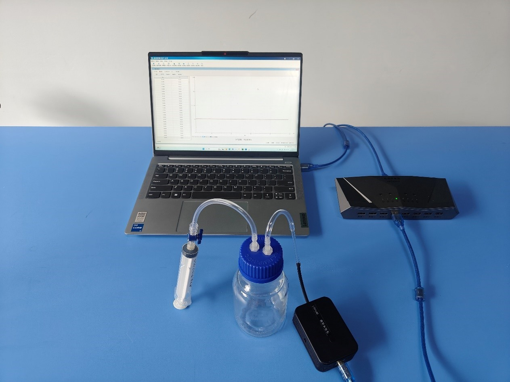
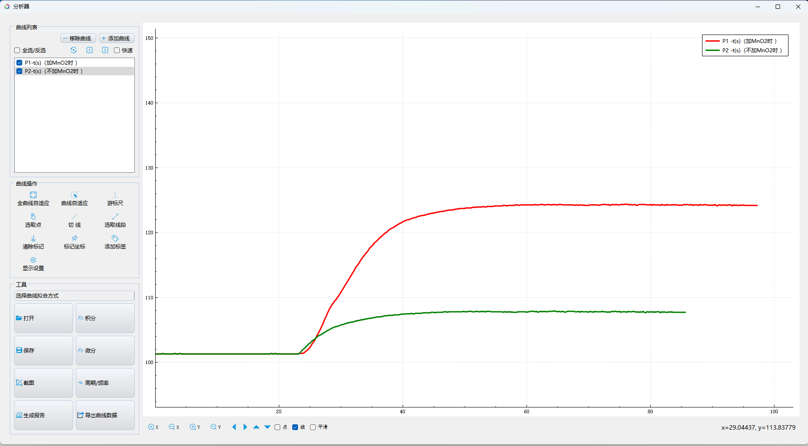

实验七十二 双氧水的分解
【实验目的】
观察有催化剂和无催化剂两种情况下，气体压强随时间变化的快慢曲线，了解催化剂在反应过程中的作用。
【实验原理】
在化学反应中能使化学反应速率加快或减慢，参与化学反应但本身不会被消耗掉的物质叫作催化剂。过氧化氢（H2O2）溶液中加入二氧化锰（MnO2）后会迅速分解成水和氧气，二氧化锰（MnO2）参与到双氧水的分解反应中，使反应速率加快，但本身不被消耗，因此在过氧化氢（H2O2）的分解反应中，二氧化锰（MnO2）起到催化剂的作用。
本实验中，通过使用压强传感器测量密封容器内气体压强的变化，来判断过氧化氢（H2O2）分解生成氧气（O2）的快慢。
【实验器材及试剂】
数据采集器、压强传感器、计算机、化学反应速率实验器、浓度为3%的双氧水、蒸馏水、二氧化锰（MnO2）等。
【实验装置图】

【实验操作步骤】
1.取一个锥形瓶，加入20ml水及少量的二氧化锰（MnO2），用带孔橡皮塞塞紧，用注射器吸取10ml质量分数为3%的 过氧化氢（H2O2）溶液，然后用注射器针头刺穿锥形瓶上的橡皮塞，先不将过氧化氢（H2O2）溶液注入；
2.将压强传感器前端测量导管插入橡皮塞孔中，然后将压强传感器接入数据采集器，进入实验数据分析软件，将数据采集器接入计算机，打开“表格视图”，选择自动记录数据的频率为“1Hz”；
3.将注射器中质量分数为3% 的过氧化氢（H2O2）溶液注入锥形瓶中，点击“采集”按钮，开始记录实验数据，记录60秒后点击“暂停”按钮停止记录数据，然后点击“数据分析”按钮，做出“压强—时间”曲线；
4.另取一个大小相同的锥形瓶，加入20ml水，不加二氧化锰（MnO2），重复上面的实验步骤，做出不加二氧化锰（MnO2）时过氧化氢（H2O2）分解过程中锥形瓶中的“压强—时间”曲线；
5.根据两次实验的图像比较有无二氧化锰（MnO2）存在时过氧化氢（H2O2）分解的快慢。

气压变化曲线
【注意事项】
过氧化氢（H2O2）与皮肤接触会有强烈的烧灼感，使皮肤和毛发局部变白，产生刺痛、瘙痒等症状，实验过程应注意避免与眼睛、皮肤接触，以防灼伤。切忌口服。若皮肤不慎与过氧化氢（H2O2）溶液接触，应立即用大量的水冲洗。
【思考与讨论】
1.计算反应前后每个锥形瓶里气体压强的变化；
2.根据实验结果分析加入二氧化锰（MnO2）对过氧化氢（H2O2）的分解的影响。